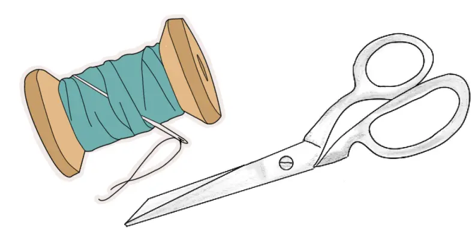
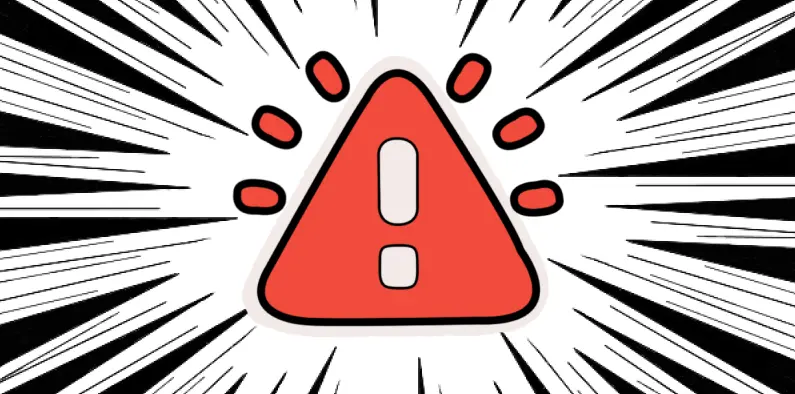
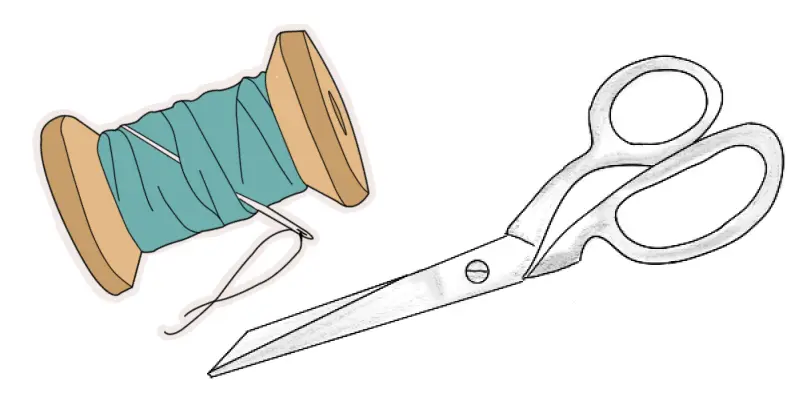
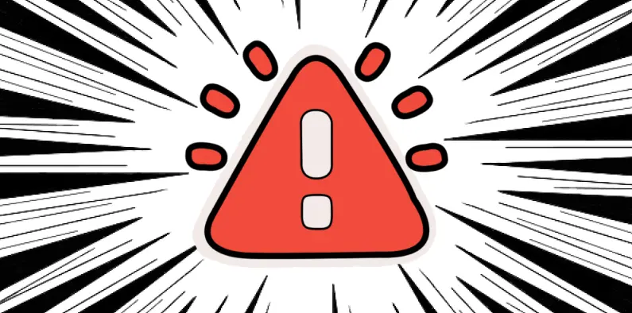

Min rejse i pixels
Udvikling i fokus
På denne side præsenteres et udvalg af de større projekter, jeg har arbejdet med i løbet af første semester på multimediedesigneruddannelsen ved KEA. Materialet er vist i sin originale form for at give et ærligt indblik i min udvikling og læringsproces gennem semesteret.
 





HELLO WORLD
I denne opgave har jeg opnået en grundlæggende forståelse for webudvikling med fokus på HTML og CSS. Arbejdet tog udgangspunkt i en fastlagt wireframe og fulgte princippet mobile first for at sikre responsivt design. Særligt CSS Grid bød på udfordringer – det var uden tvivl projektets største hurdle. Heldigvis er vi nu blevet bedre bekendte, og forholdet kan bedst beskrives som "frenemies". Desuden blev der arbejdet med Gestalt-lovene og farveteori, herunder forskellen på skærmfarver og trykte farver.